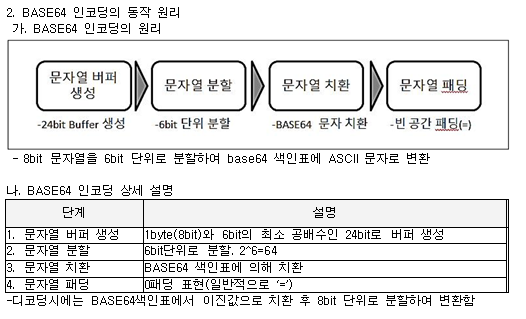

<script type = "text/javascript">
// varation
  var index=
  [0, 1, 2, 3, 4, 5, 6, 7, 8, 9,
  10, 11,12,13,14,15,16,17,18,19,
  20, 21.22,23,24,25,28,];
  var question =
  [
  // 0
  'BASE64',
  // 1
  'CPS',
  // 2
  '시선통신기술', 
  // 3
  'Thrashing',
  // 4
  '앱접근성',
  // 5
  '스마트계약',
  // 6
  'Wifi 6',
  // 7
  '5G',
  // 8
  'Semantic Web',
  // 9
  'Robo Advisor',
  // 10
  'ISO/IEC 15408',
  // 11
  '영지식 증명',
  // 12
  '이해관계자 관리',
  // 13
  '양자 암호 통신',
  // 14 
  '발주 프로세스',
  // 15 
  '소프트웨어 개발보안 가이드',
  // 16
  '옴니채널',
  // 17
  '빅데이터 개인정보보호 가이드라인',
  // 18 
  'ProductLine',
  // 19 
  'ISO61508',
  // 20
  '객체지향방법론',
  // 21 
  '분리발주',
  // 22
  '분할발주',
  // 23 
  '디지털 포렌식',
  // 24 
  '블록체인 머클트리',
  // 25
  '소프트웨어 영향 평가 제도',
  ];
  var answer = 
  [
  // 0
  '# 정의 : Binary data / 플랫폼 독립적 / 64개 ASCII영역 문자열 / 인코딩<br/>\
  # 특징 <br/>\
  - Binary-Text Encoding <br/>\
  - 64개 ASCII 문자 사용 <br/>\
  - 6Bit 단위 치환 <br/>\
  <br/>\
  ',
  // 1
  '# 정의 : 대규모 센서,액츄에이터 / 실시간 제어 컴퓨터 요소 결합 복합 시스템 <br/><br/>\
  # 핵심 요소 : 통신 / 연산 / 제어 <br/>\
  # 요구사항 : 고신뢰성, 실시간성, 안전성, 자율성, 보안성 <br/>\
  ',
  // 2
  '# 정의 : 화면기반 연결 기술 <br/><br/>\
  # 기술요소 <br/>\
  - 자가공간 필터링 : 10도 이내 자가 공간 인식 <br/>\
  - 객체 구분형 이미지 특성 매칭 : 객체 타입에 따른 이미지 특성 추출 <br/>\
  - 통신 대상 인식 프로토콜 : 10도 이내 대상 단말의 탐색 응답 수신 <br/>\
  - Wifi P2P 기반 시선 통신 프로토콜 : PAM(Pre-Association Messaging ; 사전 소용량 통신) <br/>\
  ',
  // 3
  '# 정의 : 페이지 폴트 / 수행시간 < 페이지 교체 시간 / 상태 <br/><br/>\
  # Thrashing 예방책 <br/>\
  1) Locality 활용 방안 <br/>\
  - Working Set : 동일 데이터 압축한 단위 <br/>\
  - PrePaging : 예측되는 Page 메모리에 미리 적재 <br/>\
  2) Page Fault 활용 방안 <br/>\
  - PFF(Page Fault Frequency) : 페이지 부재 비용의 상한, 하한을 둬서 프레임 개수 조절 <br/>\
  - 자원의 유휴량 확보 : 메모리 확장 <br/>\
  ',
  // 4
  '# 정의 : 국가 정보화 기본법 32조 5항 / 접근성 보장 / 지침 <br/><br/>\
  # 필수사항 <br/>\
  - 대체 텍스트 제공 <br/>\
  - 초점 제공 (Tab order) <br/>\
  - 운영체제 접근성 기능 지원 : 타 모바일 기기 도움 받을 수 있게 호환 <br/>\
  - 누르기 동작 지원 <br/>\
  - 색에 무관한 인식 : 무늬, 패턴 함께 제공 <br/>\
  - 명도 대비 : 전경 배경색 구분 <br/>\
  - 자막 제공 <br/>\
  ',
  // 5
  '# 정의 : 분산 원장 기술 / 거래조건 / 자동 체결 / 블록체인 2.0 / 계약체결 이행 기술 <br/><br/>\
  # 스마트 계약 원칙 <br/>\
  - 관측 가능성 : 서로 관찰하거나 입증할 수 있어야 함. <br/>\
  - 검증 가능성 : 특이사항 공표 <br/>\
  - 사생활 보호 <br/>\
  - 강제 가능성 : 계약 구속력 <br/>\
  ',
  // 6
  '# 정의 : 다중접속 환경에 최적화된 Wifi <br/><br/>\
  # 기술요소 <br/>\
  - 핸드오버 기술 : 기지국 간 통신 서비스 끊김 현상을 최소화 <br/>\
  - 직교주파수분할다중액세스(OFDMA;Orthogonal Frequency Division Multiple Access) : 원하는 신호만 취하는 방식으로 최소 대역폭을 확보하면서 통신이 가능한 기술 <br/>\
  - MU-MIMO(Multi User Multiple Input Multiple Output) : 한번에 많은 데이터 전송, 하나의 AP에서 더 많은 동시 클라이언트 지원<br/>\
  - 공간 제어용(Spatial Reuse) : 다른 단말의 통신을 방해하지 않는다면 통신 허용 <br/>\
  ', 
  // 7
  'eMBB(enhanced Mobile BroadBand) : 광대역<br/>\
  URLL(Ultra-Reliable and Low Latancey Communication) : 초고신뢰-초저지연 통신 <br/>\
  mMTC(massive Machine Type Communication) : 대규모 사물 통신 <br/>\
  ',
  // 8
  '# 정의 : 데이터 의미 관계 / RDF / 온톨로지 / 지능형 웹 패러다임 <br/><br/>\
  #  특징 <br/>\
  - 기술적 특징 : 메타데이터기반의 지능형 추론형 웹으로 확장 / 의미사전인 Ontology 구축<br/>\
  - 서비스적 특징 : 정보제공등 맞춤형 정보서비스 통한 QoE 보장 / 도메인별 의미기반의 검색 <br/><br/>\
  # 핵심 구성요소<br/>\
  - Metadata : 메타데이터와 추론에 필요한 규칙을 표현 / XML, RDF언어로 표현 <br/>\
  - Ontology : 데이터의 의미와 관계 정보를 체계적으로 표현 / 지식표현 기술 이용 <br/>\
  - Logical Reasoing : 온톨로지와 함께 결합된 관계정보들로부터 새로운 정보 도출 / 정보를 결합하여 새 정보 도출 <br/>\
  ',
  // 9
  '로봇과 어드바이저(투자전문가)가 조합된 용어로서, 고도화된 알고리즘과 빅데이터 기반으로 시장 환경에 따라 자산을 관리해주는 금융자산관리용 인공지능<br/><br/>\
  # 정의 : 인공지능 / 커뮤니케이션 / 소프트웨어 <br/><br/>\
  # 등장배경, 구성도 <br/><br/>\
  <br/>\
  ',
  // 10
  '# 정의 : Common Criteria, 정보 보안평가 인증을 위한 평가 기준 <br/><br/>\
  # CC의 요구사항과 보호 프로파일, 보안 목표 명세서의 관계 <br/>\
  <br/>\
  ',
  // 11
  '# 정의 : 암호학 / 참 증명 / 참,거짓 여부만 노출 / interactive 절차 <br/><br/>\
  # 특징 <br/>\
  - 완전성 : (참) 정직한 증명자는 정직한 증명자에게 납득시킬 수 있음 <br/>\
  - 건실성 : (거짓) 어떠한 부정직한 증명자라도 정직한 증명자에게 사실 납득 불가능 <br/>\
  - 영지식성 : (참) 검증자는 문장의 참 거짓 이외에는 아무것도 알 수 없어야 한다. <br/><br/>\
  # 사례 : 이더리움(zk-SNARKs, 제크캐시(Quorum, JP 모건), 코인플러그(메타디움, 부정거래 및 사기 행위) <br/>\
  소유한 사람끼리 일체의 개인정보를 노출하지 않고, 상호간에 코인 전송 <br/>\
  ',
  // 12
  '프로젝트에 영향미치는 사람,그룹,조직을 식별하고 이해관계자의 기대사항과 영향력 파악하여 관리하는 전략<br/>\<br/>\
  # 정의 : 프로젝트 영향 요소 식별, 분석하여 프로젝트 참여 유도 전략 <br/>\
  # 이해관계자 관리 프로세스 : 식별 -> 계획 -> 관리 -> 감시 <br/>\
  # 이해관계자 유형별 관리 전략 <br/>\
  - 권력-관심 그리드 <br/>\
  - 현저성 모델 <br/>\
  - 이해관계자 큐브 <br/>\
  # 갈등관리 기법 <br/>\
  - 강제, 문제해결, 절충/타협, 회피, 수용 <br/>\
  <br/>\
  ',
  // 13
  '#정의 : 단일광자 / 불확실성, 비복제성 / 키분배 / 도청 불가능 통신 보안 기술<br/><br/>\
  # 특징 : <br/>\
  - 키분배 문제 해결 : 기존 암호 분배의 취약점(MITM;Main in the Middle)해결 <br/>\
  - 안전한 솔루션 : 특정 알고리즘에 의존하지 않음 <br/>\
  - 병목현상 해결 : 기속 기술, 저속 암호화 문제 해결 <br/><br/>\
  # 양자 암호 통신 기술 특징 <br/>\
  - 양자 중첩 (Quantum Superposition) : 여러 상태가 동시에 존재, 측정 전까지 상태를 알 수 업음 <br/>\
  - 양자 얽힘 (Quantum Entanglement) : 둘 이상의 양자가 멀리 떨어져 있어도 존재 <br/>\
  - 불확정성 (Uncertainty Principle) : 서로다른 물리량 동시에 정확하게 측정 불가 -> 복제 불가 <br/>\
  ',
  // 14
  '# 정의 : 정보시스템 도입 최선의 사업자 선정 과정 <br/><br/>\
  # 구성요소 <br/>\
  - RFI(Request for Information) : 사전정보 요청 <br/>\
  - RFP(Request for Proposal) : 제안 요쳥서 <br/>\
  - Proposal : 고객의 요구사항 반영 제안서 <br/>\
  ',
  // 15
  '# 정의 : 2012.09. / 행안부, KISA / 시큐어 코딩 지침 <br/><br/>\
  # 개발보안 가이드 기준 <br/>\
  - 입력데이터 검증 및 표현 : SQL 삽입, 경로조작, XSS <br/>\
  - 보안기능 : 부적절 인가, 중요정보 평문저장, 하드코드된 <br/>\
  - 시간 및 상태 : 경쟁조건, 종료되지 않는 반복분, 재귀 함수 <br/>\
  - 에러 처리 : 오류상황 대응 부재, 오류 메시지 통한 정보 노출 <br/>\
  - 코드 오류 : 널 포인터 역참조, 부적절한 자원 해제 <br/>\
  - 캡슐화 : 제거되지 않고 남은 코드, 시스템 데이터 정보 노출 <br/>\
  - API 오용 : DNS Lookup 의존 보안 결정 <br/>\
  ',
  // 16
  '# 정의 <br/>\
  - 모든 채널 / 동일 쇼핑 제공 <br/>\
  - Anytime, Anywhere, Anydevices <br/><br/>\
  # 종류 : 쇼루밍, 역쇼루밍, 모루밍 <br/><br/>\
  # 유통 채널 : 싱글, 멀티, 크로스, 옴니 <br/><br/>\
  # 적용 기술 <br/>\
  - 빅데이터 : 온라인, SNS 사이 빅데이터 분석 / 월마트의 폴라리스 자체 검색엔진 개발 <br/>\
  - 옴니페이 : 하나의 플랫폼에 다양한 간편 결제 방식 제공 / 삼성페이, 롯데 옴니페이, 카카오페이 <br/>\
  - 비콘 : 블루투스 기반 최대 100m 거리 인식 가능, 실내 위치 파악 / 쇼핑정보, 쿠폰 전송 <br/>\
  ',
  // 17
  '# 정의 :  “공개된 정보” 및 “이용내역정보”와 같은 데이터의 수집-분석-저장-처리에 있어서 이를 활용하는 산업의 발전과 정보주체의 프라이버시 보호 위해 제정된 빅데이터 활용 가이드라인<br/>\
  # 주요 내용 <br/>\
  - 비식별화 조치 <br/>\
  - 빅데이터 투명성 확보 : 처리사실, 목적, 수집 출처 및 정보 활용 거부권의 행사 방법등을 이용자에게 투명하게 공개 <br/>\
  - 개인정보 재식별시 조치 : 재식별 될 경우 즉시 파기하거나 추가적인 비식별화 조치하도록 함 <br/>\
  - 민감정보 통신비밀 처리 금지 : 특정 개인의 사상/신념, 정치적 견해등 민감정보의 생성을 목적으로 정보 처리 금지 <br/>\
  - 기술적 관리 보호 조치 : 저장/관리 시스템 기술적 관리 <br/>\
  ',
  // 18
  '도메인 요구사항에 맞는 재사용 단위인 Core Assets을 미리 개발하고. 실제 Product 개발 시에는 Core Assets을 조립하여 여러 개의 Product를 개발하는 접근방법<br/><br/>\
  # 정의 : 미리 개발한 재사용 단위 핵심자산(Core Assests)을 이용하여 가공하여 산출하는 기법 <br/>\
  # 특징 <br/>\
  - 재사용성 : CBD의 연장선상, 재사용의 개념 코드레벨이 아닌 비즈니스 도메인에서 식별 <br/>\
  - 도메인 공학 우선 수행 : 기존 프로세스는 우선 도메인 공학을 수행후 각각의 Product을 만들어가는 Application 공학 수행 <br/>\
  (도메인 공학 : 시스템 기능, 품질 측면의 공통,차이점 분석해 Product Line Asset을 만드는 활동) <br/>\
  (Application 공학 : Product Line Asset 들을 조합하여 고객이 원하는 Product을 생산하는 활동) <br/><br/>\
  # 구성도 및 구성요소 <br/>\
  <br/>\
  ',
  // 19
  '전기/전자/프로그램 가능한 전자 안전 관리 시스템의 기능 안전 요구사항을 정의한 국제표준<br/><br/>\
  # 정의 : 전기,전자 / 안전 확보 표준 <br/><br/>\
  # 구성요소 <br/>\
  - 안전 수명 주기 : 안전 수명주기를 정의, 이에 따른 활동, 절차, 기술 정의, 설계요구  <br/>\
  - 하드웨어 : 안전 요구 사항<br/>\
  - 소프트웨어 : SIL(안전 무결성)<br/><br/>\
  ',
  // 20
  '# 정의 : 구체적 대상 /공통 특징 추출 / 추상화 => 객체 위주 SW 개발 방법론 <br/><br/>\
  # 종류 <br/>\
  - 추상화 : 객체 지향적 관점에서 클래스를 정의<br/>\
  - 캡슐화 : 변수와 함수를 결합시켜 외부 접근 보호<br/>\
  - 다형성 : 하나의 인터페이스 다양한 구현 방법<br/>\
  - 상속성 : 상위 개념의 특징을 하위 개념이 물려받는 것<br/><br/>\
  # 프로세스 <br/>\
  <br/>\
  ',
  // 21
  '# 정의 : HW, SW 및 시스템 통합 등을 일괄 계약하지 않고 각각 발주ㆍ계약하는 제도<br/>\
  # 유형 <br/>\
  - H/W , S/W <br/>\
  - S/W별 분리 : 패키지 / 개별 구축 <br/>\
  ',
  // 22
  '# 정의 : PMO, 요구사업, 개발사업으로 분할하여 발주 / 명확한 요구사항 / 사업관리의 가시성 확보 <br/><br/>\
  <br/><br/>\
  # 분할발주 단계 <br/>\
  - 공정분할 : 요구사항, 설계, 구현, 시험, 운영<br/>\
  - 기능분할 : 기능별 서브시스템 분할 <br/>\
  - 부품분할 : 부품, 패키지, 소프트웨어 <br/>\
  ',
  // 23
  '# 정의 : 디지털 자료 근거 / 사실 관계 규명 / 보안 서비스 <br/><br/>\
  # 기본 원칙 : 정당성, 재현, 신속성, 연계보관성, 무결성 <br/><br/>\
  # 기술 요소 <br/>\
  - 수집기술 : 디스크 이미징, 메모리 덤프, 무결성 입증 <br/>\
  - 분석기술 : 타임라인 분석, 삭제된 파일 복구, 비정상 파일 검색, 이메일 분석, 슬랙공간 분석, 암호 복구, 덤프 메모리 분석 <br/>\
  ',
  // 24
  '# 정의 : 블록체인 블록 / 거래 내역 기록 트리 <br/><br/>\
  # 블록의 구조 <br/>\
  블록 헤더 / 거래 카운터 / 거래기록 내역 <br/><br/>\
  # 블록 헤더의 구조 <br/>\
  이전 블록의 해시값 / 난이도, 타임 스탬프, 난스 / 머클 루트 <br/><br/>\
  # 머클트리 특징 <br/>\
  - 검색 효율 <br/>\
  - 거래 위변조 방지 <br/>\
  - Light Node로 원활한 모바일 지원 <-> Full Node <br/>\
  ',
  // 25
  '# 정의 : 산업 생태계 영향 / 사전 조정 제도<br/>\
  ',
  ];
  var current;
  var bInit = 0;

// function 
  function next()
  {
    if ( bInit != 0 )
    {
      index.splice( current, 1);
      question.splice( current, 1);
      answer.splice( current, 1);
    }
    else
    {
      bInit = 1;
    }

    if( index.length == 0 )
    {
      alert("All question resolved!");
    }
    else
    {
      drawScreen()
    }
  }

  function getAnswer()
  {
    document.write('Answer : <br/>' + answer[current] + '<br/><br/>');
  }

  function drawScreen()
  {
    document.body.innerHTML = "";
    document.write('** [Daily TEST] Memorization Note 1 **' + '<br /><br />');
    document.write('<button id="next" onclick="next();">Next</button>' + ' ');
    document.write('<button id="answer" onclick="getAnswer();">Answer</button>' + '<br /><br />');

    document.write( 'Left Questions : ' + index.length + '<br /><br />');
    current = Math.floor(Math.random() * index.length)
    document.write( 'Question : ' + question[current] + '<br /><br />');
  }

  document.write('<head> <meta name="viewport" content="width=device-width, initial-scale=1.0, user-scalable=no, maximum-scale=1.0, minimum-scale=1.0" </head>');
  document.write('** [Daily TEST] Memorization Note 1 **' + '<br /><br />');
  document.write('<button id="next" onclick="next();">Next</button>');

</script>
